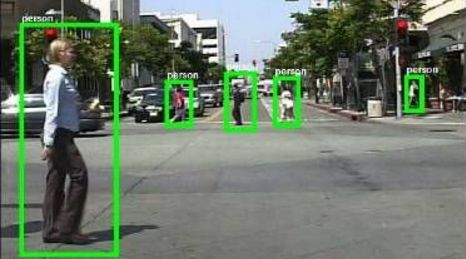
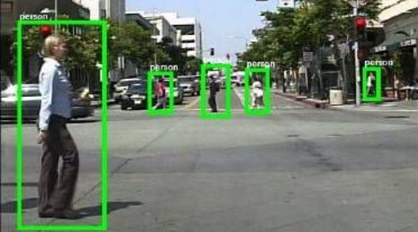

物体检测与追踪

通过算法对图像中的物体进行识别，识别之后对物体的具体行为与位置进行追踪。
目前已经能够达到很高的精准度。
应用实例：
人体躯干识别
目前实验室已经研发出算法可以对视频中的人体躯干进行识别，并对人体的外形动作进行记录
准确率高达百分之99.9

通过算法对图像中的物体进行识别，识别之后对物体的具体行为与位置进行追踪。
目前已经能够达到很高的精准度。
应用实例：
人体躯干识别
目前实验室已经研发出算法可以对视频中的人体躯干进行识别，并对人体的外形动作进行记录
准确率高达百分之99.9
地址：安徽大学（磬苑校区）理工A楼 邮编：230601
邮箱：16289199@qq.com
Copyright @2016 视觉计算与智能系统团队